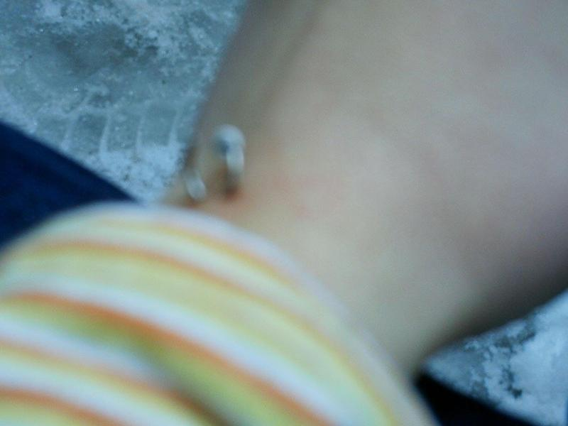
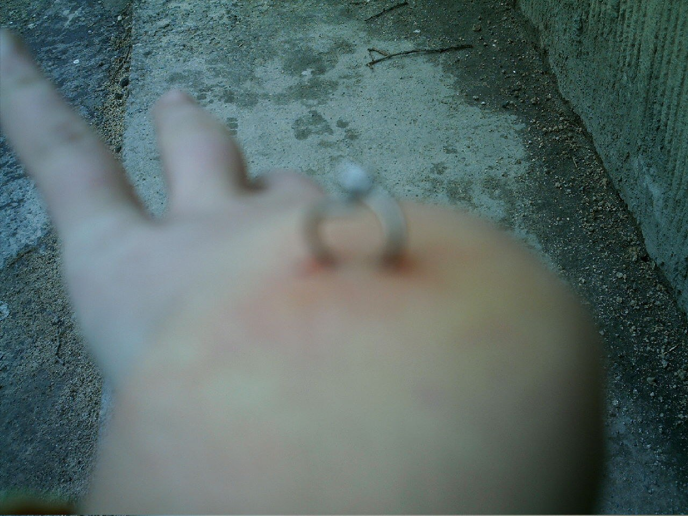
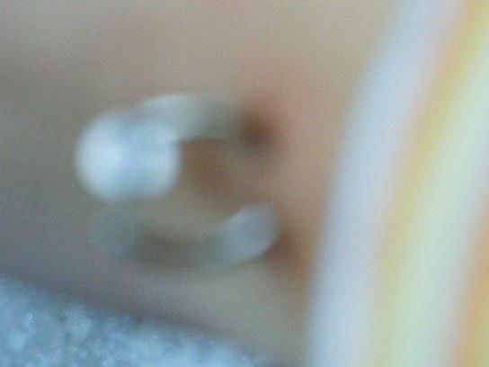

Four attempts to look at the same place. It is winter, the ground behind the hand is frozen, and the skin around the piercing is still red. A striped sleeve in orange and yellow keeps entering the frame, the warmest thing in the series. The blur is deliberate. By the last image I am so close that the piercing is almost only a shape. I did it to myself, and I am the only one who feels it. Pain is exact from the inside, and from the outside it is a blur. The only sharp thing here is not in the image: it went through my own skin, and the photographs stay soft around it.



